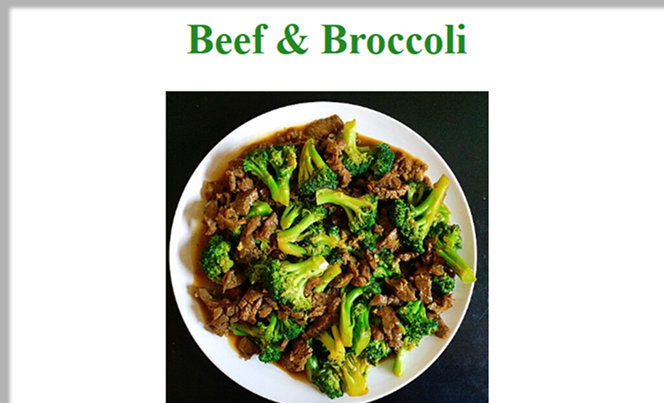
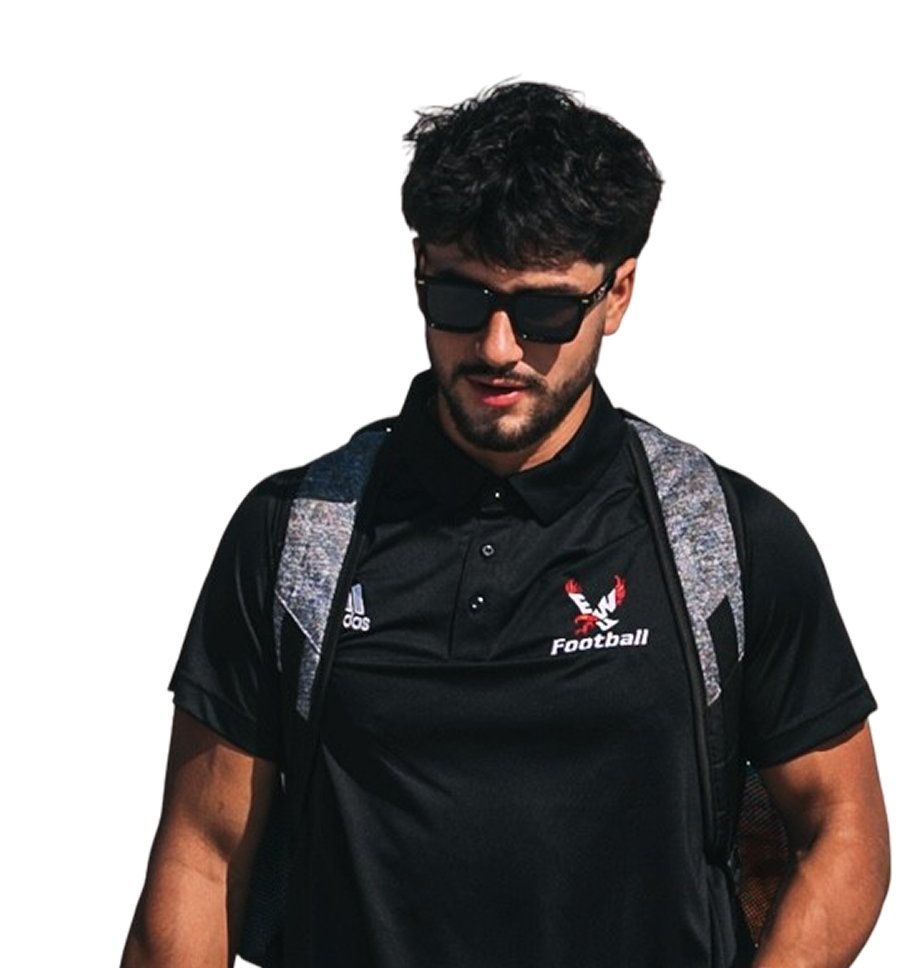
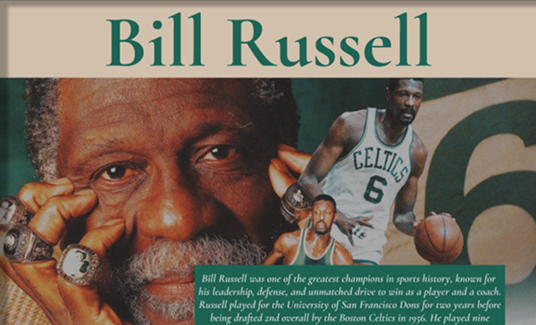
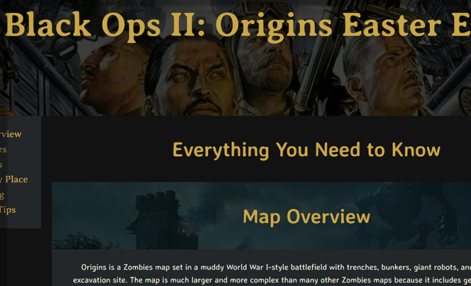
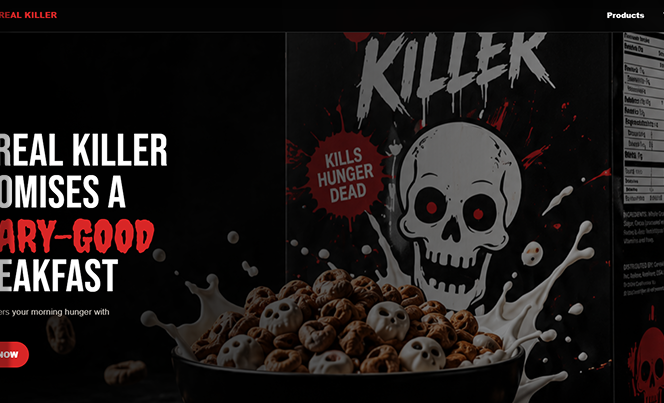

Code & Design Portfolio
Riley Rudolfo
Eastern Washington University graduate with a bachelor’s degree in Computer Science and minors in Design and Cyber Security.
I am passionate about designing technology that will help innovate the future.

Web Design Journey

Tribute Site
A tribute page project focused on storytelling, structure, and visual presentation.
View Project
Field Guide
A field guide project exploring organized content, design systems, and reusable page structure.
View Project
Product Landing Page
A responsive product landing page focused on branding, calls to action, and promotional design.
View Project